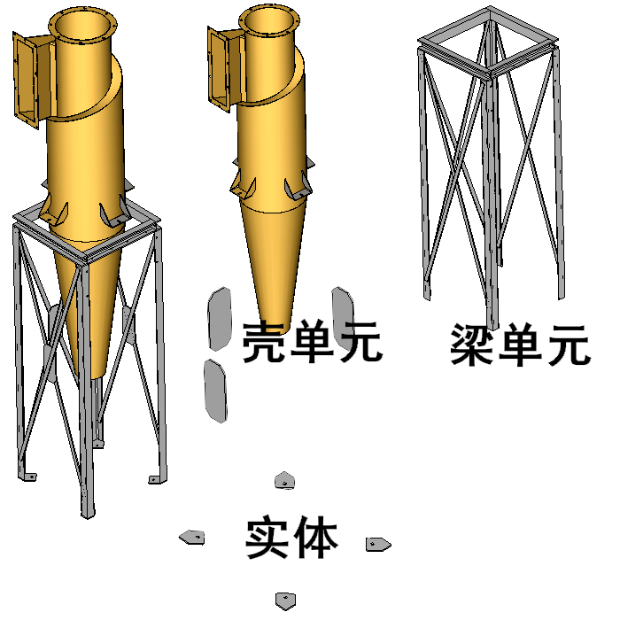
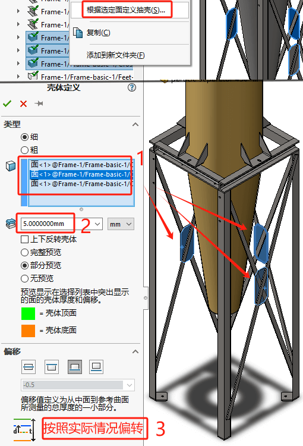
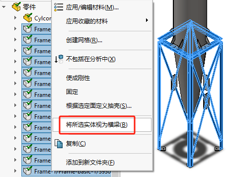
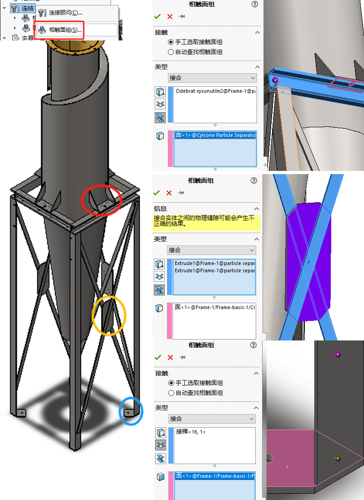
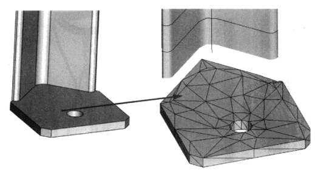
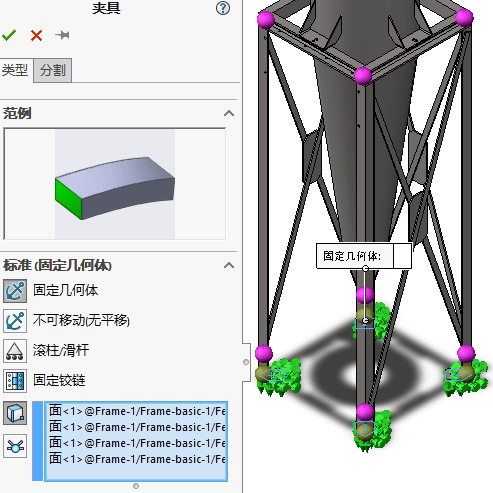
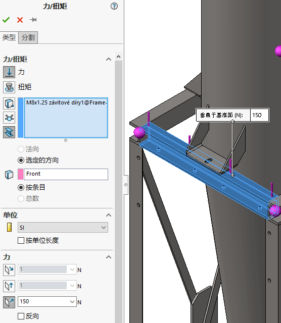

Simulation-混合网格2
本例对颗粒分离器的支架进行分析。该支架实际上是一个带有各种角撑板的焊接件。本章将采用实体、壳和梁单元来进行分析
载荷：支架除承受分离器400N的自重外，-X方向的风力也会使支架在一个方向产生向下4500N的力，而在支架另一侧产生向上4500N的力。
材料：AISI 1020钢
新建算例
创建单元
壳单元
梁单元
计算结点
查看及编辑结点：右击“结点组”，选择“编辑”。右击结点，可查看和修改结点，点击构件可进行添加与删除
- （紫红色）结点连接两个或更多的横梁构件
- （黄色）结点只连接一个横梁构件，并且与其他横梁断开连接。
连结
存在混合单元，需要使用局部接触的【相触面组】进行连结。
横梁印记 当横梁接点连接到一个实体或壳体表面时，网格划分器会在接触面生成真实横梁与之相交的印记。这更加真实地表现了接点，从而在横梁-实体/壳体相交的界面得到更好的结果。
在印记区域会生成更多单元，而且横梁接点会在印记区域连接所有的单元。如果横梁的截面不完全位于接触面内，则印记将基于部分接触的截面而生成，如图10-23所示。
夹具
载荷
划网格并运行
使用【高】品质的单元对装配体划分网格，使用【标准网格】并指定【整体大小】为 25mm
分析结果
总结
本章分析了支架模型。因为所有结构构件又薄又长，所以采用了横梁单元。这样极大地简化了分
析，并缩短了计算求解时间。
模型准备包含横梁单元及接点定义步骤，这两步都是在 SolidWorks Simulation中自动完成的。这些自动生成的接点有时需要进行手工编辑，在本章练习了这种手工编辑步骤。如果任意生成的两个接点的距离相对其他接点太近，则可以合并它们。因为横梁单元在每个末端拥有6个自由度，存在多种横梁单元的连接类型。我们通常会在全局坐标系下显示这些位移分量(或自由度)。然而，在任何其他坐标系下也可以显示自由度。
相比壳单元的节点而言，由于实体单元的节点没有旋转自由度，尝试连接壳和实体单元会沿公共边产生一个预计之外的合叶。
为了对这个分析下最后的结论，有必要查看连接处的应力。由于横梁与壳体和实体之间连接的限制，软件无法在界面处得到准确的结果。运行只使用实体单元的模型，估计会更好地研究这些位置的应力。